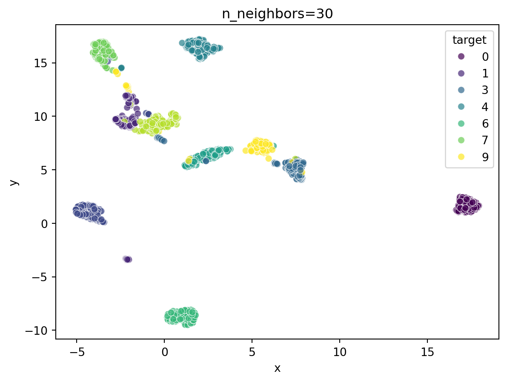

from IPython.display import Markdown, display
import matplotlib.pyplot as plt
from sklearn import datasets
import seaborn as sns
import pandas as pd
import numpy as np
import umap A diferencia de PCA (Análisis de Componentes Principales), las técnicas de reducción de dimensionalidad no lineal pueden capturar relaciones más complejas entre los datos; se suele involucrar una función de distancia o kernel para describir la relación entre dos elementos de una base de datos. Esta función de distancia captura la estructura del espacio mediante una matriz de afinidad o una gráfica de vecinos cercanos, que se cálcula en alta dimensión y se replica en baja baja dimensión. Ver Lee y Verleysen (2007) para un tratado más extenso en el tema.
Uniform Manifold Approximation and Projection (UMAP)
McInnes, Healy, y Melville (2018) introduce UMAP, que es un algoritmo de reducción de dimensionalidad no lineal que se distingue a su eficiencia computacional, escalabilidad y la capacidad de preservar simultáneamente la estructura local y global de los datos. A diferencia de métodos previos como t-SNE (ver Van der Maaten y Hinton 2008), que prioriza fuertemente la estructura local, UMAP se fundamenta en un marco teórico más riguroso derivado de la geometría Riemanniana y la topología algebraica.
El algoritmo de UMAP se puede desglosar en dos fases principales:
- Construcción de una representación topológica fuzzy de alta dimensión:
- Se presume que los datos están muestreados a partir de una variedad (manifold) de Riemann de baja dimensionalidad incrustada en un espacio euclidiano de alta dimensionalidad. Se postula que la distribución de los datos en esta variedad es aproximadamente uniforme y que la métrica Riemanniana es localmente constante o puede ser aproximada como tal.
- Grafo de k-vecinos: Para cada punto \(x_i\) en el espacio de alta dimensión, se identifican sus \(k\) vecinos más cercanos (\(k\) es el parámetro
n_neighbors). - Complejo simplicial fuzzy: A partir de estos vecinos, UMAP construye un complejo simplicial fuzzy (un grafo ponderado difuso). En este grafo, los nodos son los puntos de datos y las aristas representan las conectividades. La fuerza de la conexión (peso de la arista) entre dos puntos \(x_i\) y \(x_j\) se modela como una probabilidad de conectividad \(p_{ij}\).
- Optimización de la incrustación de baja dimensión:
- Construcción de un grafo de baja dimensión: Se inicializa aleatoriamente una incrustación de los puntos en el espacio de baja dimensión (típicamente 2D o 3D). Sobre esta incrustación, se construye un grafo con conectividades \(q_{ij}\) que idealmente reflejan las \(p_{ij}\) del espacio de alta dimensión.
- Función de costo: UMAP minimiza una función de costo de entropía cruzada binaria (o una función de pérdida equivalente) entre las distribuciones de probabilidad de alta y baja dimensión. La función de pérdida penaliza las discordancias:
- Si dos puntos están conectados en alta dimensión (\(p_{ij}\) es alta) pero no en baja (\(q_{ij}\) es baja), hay una penalización fuerte. (Fuerzas atractivas)
- Si dos puntos no están conectados en alta dimensión (\(p_{ij}\) es baja) pero sí lo están en baja (\(q_{ij}\) es alta), la penalización es menor. (Fuerzas repulsivas, gestionadas eficientemente por un muestreo negativo).
- Optimización: La minimización se realiza mediante descenso de gradiente estocástico (SGD). Los puntos en el espacio de baja dimensión se ajustan iterativamente para que las conectividades \(q_{ij}\) se acerquen lo más posible a las \(p_{ij}\).
Ejemplo
estaremos usando la base de datos digits de digits escritos a mano más alta, en particular de imágenes en escala de grises de \(8 \times 8\), representadas como vectores de 64 dimensiones.
digits = datasets.load_digits()
print(digits.DESCR).. _digits_dataset:
Optical recognition of handwritten digits dataset
--------------------------------------------------
**Data Set Characteristics:**
:Number of Instances: 1797
:Number of Attributes: 64
:Attribute Information: 8x8 image of integer pixels in the range 0..16.
:Missing Attribute Values: None
:Creator: E. Alpaydin (alpaydin '@' boun.edu.tr)
:Date: July; 1998
This is a copy of the test set of the UCI ML hand-written digits datasets
https://archive.ics.uci.edu/ml/datasets/Optical+Recognition+of+Handwritten+Digits
The data set contains images of hand-written digits: 10 classes where
each class refers to a digit.
Preprocessing programs made available by NIST were used to extract
normalized bitmaps of handwritten digits from a preprinted form. From a
total of 43 people, 30 contributed to the training set and different 13
to the test set. 32x32 bitmaps are divided into nonoverlapping blocks of
4x4 and the number of on pixels are counted in each block. This generates
an input matrix of 8x8 where each element is an integer in the range
0..16. This reduces dimensionality and gives invariance to small
distortions.
For info on NIST preprocessing routines, see M. D. Garris, J. L. Blue, G.
T. Candela, D. L. Dimmick, J. Geist, P. J. Grother, S. A. Janet, and C.
L. Wilson, NIST Form-Based Handprint Recognition System, NISTIR 5469,
1994.
|details-start|
**References**
|details-split|
- C. Kaynak (1995) Methods of Combining Multiple Classifiers and Their
Applications to Handwritten Digit Recognition, MSc Thesis, Institute of
Graduate Studies in Science and Engineering, Bogazici University.
- E. Alpaydin, C. Kaynak (1998) Cascading Classifiers, Kybernetika.
- Ken Tang and Ponnuthurai N. Suganthan and Xi Yao and A. Kai Qin.
Linear dimensionalityreduction using relevance weighted LDA. School of
Electrical and Electronic Engineering Nanyang Technological University.
2005.
- Claudio Gentile. A New Approximate Maximal Margin Classification
Algorithm. NIPS. 2000.
|details-end|El modelo UMAP se aprende y se usa para transformar la base de datos original de 784 dimensiones a solo dos. Las imagenes se ven como sigue:
_, axes = plt.subplots(nrows=1, ncols=10, figsize=(10, 3))
for ax, image, label in zip(axes, digits.images, digits.target):
ax.set_axis_off()
ax.imshow(image, cmap=plt.cm.gray_r, interpolation="nearest")
ax.set_title("label: %i" % label)
plt.show()
#plt.matshow(digits.images[0])Definición del modelo UMAP y transformación:
emb = umap.UMAP(metric="euclidean", n_neighbors=15, n_components=2, n_jobs=16).fit_transform(digits.data)Graficamos con seaborn:
df = pd.DataFrame(data=emb, columns=["x", "y"])
df["target"] = digits.target
sns.scatterplot(x="x", y="y",
hue="target", palette='viridis',
alpha=0.7, data=df)
¿Cómo se vería con PCA 2D?
Esta pregunta se responderá comparando de manera práctica
from sklearn.preprocessing import StandardScaler
from sklearn.decomposition import PCA
scaler = StandardScaler()
scaled_features = scaler.fit_transform(digits.data)
#scaled_features = digits.data
model = PCA(n_components=2)
principal_components = model.fit_transform(scaled_features)
pca_df = pd.DataFrame(data=principal_components, columns=['PC1', 'PC2'])
pca_df['target'] = digits['target']
sns.scatterplot(
data=pca_df,
x='PC1',
y='PC2',
hue='target', # Colorea los puntos según si sobrevivieron o no
palette='viridis', # Esquema de colores
alpha=0.7 # Transparencia
)Parametros: número de vecinos
for nn in [3, 10, 15, 30, 50, 100, 300, 1000, 1797]:
emb = umap.UMAP(metric="euclidean", n_neighbors=nn, n_components=2, n_jobs=16).fit_transform(digits.data)
display(Markdown(f"## n_neighbors={nn}"))
df = pd.DataFrame(data=emb, columns=["x", "y"])
df["target"] = digits.target
sns.scatterplot(x="x", y="y",
hue="target", palette='viridis',
alpha=0.7, data=df)
plt.title(f"n_neighbors={nn}")
plt.show()/home/sadit/miniconda3/lib/python3.11/site-packages/sklearn/manifold/_spectral_embedding.py:273: UserWarning: Graph is not fully connected, spectral embedding may not work as expected.
warnings.warn(n_neighbors=3
n_neighbors=10
n_neighbors=15
n_neighbors=30

n_neighbors=50
n_neighbors=100
n_neighbors=300
n_neighbors=1000
/home/sadit/miniconda3/lib/python3.11/site-packages/umap/umap_.py:2462: UserWarning: n_neighbors is larger than the dataset size; truncating to X.shape[0] - 1
warn(n_neighbors=1797
Ahora veremos como actua el parámetro min_dist
for min_dist in [0.01, 0.03, 0.1, 0.3, 1.0]:
nn = 15
emb = umap.UMAP(metric="euclidean", n_neighbors=nn, n_components=2, n_jobs=16, min_dist=min_dist).fit_transform(digits.data)
display(Markdown(f"## n_neighbors={nn}, min_dist={min_dist}"))
df = pd.DataFrame(data=emb, columns=["x", "y"])
df["target"] = digits.target
sns.scatterplot(x="x", y="y",
hue="target", palette='viridis',
alpha=0.7, data=df)
plt.title(f"n_neighbors={nn}")
plt.show()n_neighbors=15, min_dist=0.01
n_neighbors=15, min_dist=0.03
n_neighbors=15, min_dist=0.1
n_neighbors=15, min_dist=0.3
n_neighbors=15, min_dist=1.0
Criterios prácticos para elegir entre PCA y UMAP
- Estructura
- Eficiencia
- Reproducibilidad
Referencias
Lee, John A, y Michel Verleysen. 2007. Nonlinear dimensionality reduction. Springer Science & Business Media.
McInnes, Leland, John Healy, y James Melville. 2018. «Umap: Uniform manifold approximation and projection for dimension reduction». arXiv preprint arXiv:1802.03426.
Van der Maaten, Laurens, y Geoffrey Hinton. 2008. «Visualizing data using t-SNE.» Journal of machine learning research 9 (11).